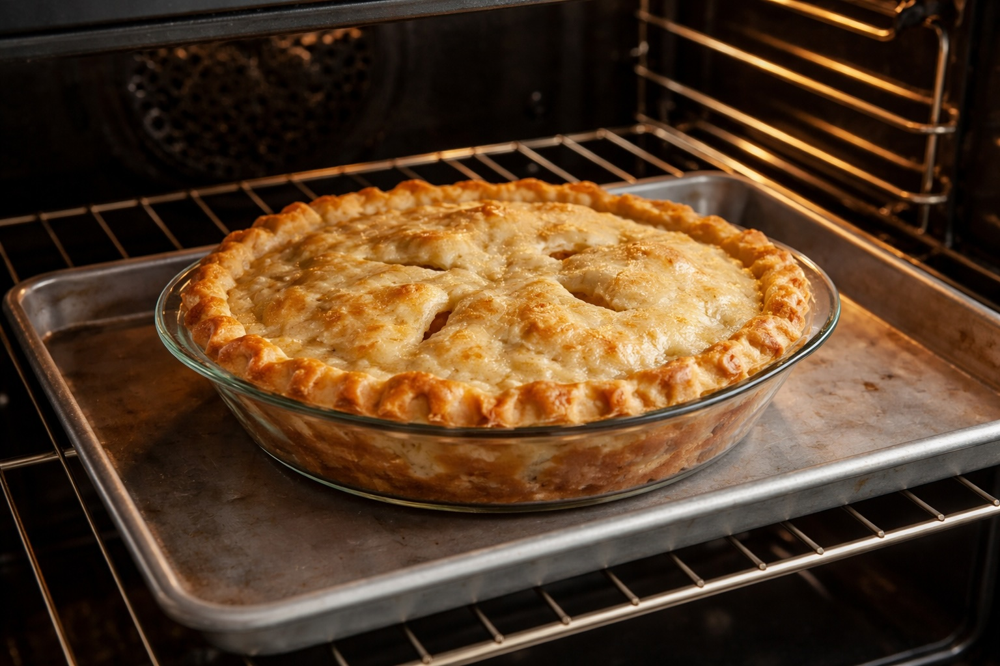

Whole Foods Recipes: Classic Apple Pie
Last updated: March 12, 2026

- Apple pie is simple but depends heavily on good apples and proper crust handling.
- Roll the dough thin (about 1/8 inch) to avoid a bread-like crust.
- Piling apples slightly above the crust before baking is correct because apples shrink while cooking.
- Let the pie cool at least 30–45 minutes so the filling sets.
- Small imperfections in crust shape are normal and give the pie a rustic character.
Purpose
This recipe focuses on a simple, classic apple pie made from whole ingredients. The goal is to create a reliable homemade dessert using real apples, butter, and basic pantry ingredients rather than processed fillings.
Total Time
Approximately 2 hours total including dough chilling and cooling time. Active preparation time is about 30–40 minutes.
Ingredients
Crust
- 2½ cups flour all purpose preferred
- 1½ sticks cold butter
- ½ tsp salt
- ½ cup cold water
Filling
- 5 medium Honeycrisp apples
- ½ cup sugar
- 1 tsp cinnamon
- 1 tbsp lemon juice
- 2–3 tbsp flour
- pinch salt
- 2–3 small cubes butter
Equipment
- 8–8.5 inch pie dish (glass Pyrex works well)
- mixing bowl
- rolling pin
- baking sheet or tray
- knife and cutting board
Instructions
1. Make the Dough
In a bowl mix flour and salt. Cut cold butter into the flour until the texture resembles coarse crumbs. Add cold water one tablespoon at a time until the dough just holds together.
2. Chill Dough
Form the dough into a ball and refrigerate for about 30 minutes. This makes the dough easier to roll and helps create a flakier crust.
3. Prepare Apples
Peel and slice the apples. In a bowl mix apples with sugar, cinnamon, lemon juice, flour, and a pinch of salt.
4. Roll Dough
Divide dough into two pieces. Roll each piece into a circle about 1/8 inch thick. The bottom crust should be slightly larger (about 11–12 inches) so it can cover the bottom and sides of the dish.
5. Assemble Pie
Place the larger rolled dough into the pie dish. Add the apple filling and place small butter cubes on top of the apples. Cover with the second dough circle. Cut several small vents in the top crust to allow steam to escape.
6. Bake
Place the pie dish on a baking tray and bake at 375°F for about 60 minutes, until the crust is golden brown and the filling is bubbling.
Finish
Allow the pie to cool for at least 30–45 minutes before slicing. This allows the filling to thicken and prevents it from running.
Notes
- Apple quantities depend on pie dish size. For smaller dishes (8–8.5 inches), 4 apples work well.
- If the crust browns too quickly, loosely cover the edges with foil.
- Rolling the dough thin helps prevent a bread-like bottom crust.
- Placing the pie on a baking tray prevents spills from bubbling filling.
Personal Note
The first version of this pie was intentionally rustic. The apples held their shape while softening nicely, and the filling set well during cooling. Homemade apple pie pairs exceptionally well with vanilla ice cream and makes the kitchen smell incredible while baking.
Next steps
Continue with more Whole Food Cooking.
This article focuses on general food quality and cooking with quality ingredients, not medical advice.